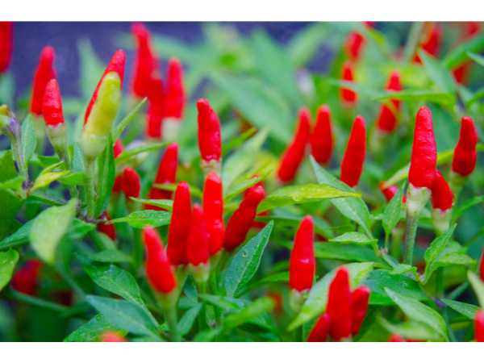

Capsicum frutescens
Common Names: Bird's Eye Chilly, Thai Chilli, Tabasco Pepper, Malagueta Pepper
Local Name: Kanthari Mulagu (Tamil), Kani Mirchi (Hindi)
Family: Solanaceae
Origin: Tropical Americas; widely naturalized in Asia and Africa
Plant Type: Perennial shrub (grown as annual in cooler climates)
Average Lifespan: 2–3 years as perennial; annual in temperate climates
| Growth Habit | Erect, branching shrub; compact and bushy |
| Plant Size | 45–120 cm tall |
| Leaves | Ovate, smooth, dark green; 4–8 cm long |
| Flowers | Small, white with purple tinge; pendant; self-fertile |
| Fruit | Small, 1–3 cm; erect or pendant; extremely pungent |
| Fruit Color | Green when unripe; turns red, orange, or yellow when ripe |
| Seed Characteristics | Small, flat, cream-coloured; high capsaicin content |
| Root System | Fibrous, shallow root system |
| Climate | Tropical to subtropical; warm and humid |
| Temperature Range | 20–35°C; frost-sensitive |
| Rainfall Requirement | 600–1200 mm annually; well-distributed |
| Soil Type | Well-drained, fertile loamy soil; rich in organic matter |
| Soil pH Preference | 6.0–7.0 |
| Sun Requirement | Full sun (6+ hours daily) |
| Spacing | 30–45 cm between plants |
| Water Requirement | Moderate; consistent moisture; avoid waterlogging |
| Can it Grow in Pots? | Yes; excellent in medium containers (10–15 liters) |
| Fertilizer Schedule | Monthly with balanced fertilizer; potassium-rich during fruiting |
| Recommended Organic Fertilizers | Compost, vermicompost, wood ash, neem cake |
| Pruning Time | Pinch growing tips to encourage bushy growth and more fruiting |
| Common Pests | Aphids, thrips, whiteflies, fruit borers |
| Common Diseases | Anthracnose, powdery mildew, bacterial wilt, mosaic virus |
| Disease Prevention & Remedies | Crop rotation, neem oil spray, remove infected plants promptly |
| Flowering Months | Year-round in tropics; 6–8 weeks after transplanting |
| Fruiting Season | Continuous in tropics; 70–90 days from sowing |
| Days to Harvest | 70–90 days from sowing; harvest when fully coloured |
| Average Yield per Plant | 200–500 g per plant per season |
| Pollination Type | Self-fertile; insect pollination improves yield |
| Propagation by Seeds | Seeds germinate in 7–14 days; sow in seedling trays and transplant at 4–6 weeks |
| Water Usage | Moderate; efficient with drip irrigation |
| Biodiversity Benefits | Flowers attract bees and pollinators; fruits eaten by birds |
| Commercial Production Regions | India (Kerala, Tamil Nadu), Thailand, Vietnam, Ethiopia |
| Market Uses | Fresh chilli, dried spice, hot sauce, pickles |
| Market Value (Approx.) | ₹80–200 per kg fresh; ₹400–800 per kg dried |
| Calories | 40 kcal per 100g |
| Vitamin C | 143 mg per 100g (240% DV) |
| Vitamin A | 952 IU per 100g |
| Antioxidants | Rich in capsaicin, carotenoids, and flavonoids |
| Digestive Health | Capsaicin stimulates digestion and metabolism; used in Siddha medicine for digestive disorders |
| Anti-inflammatory Properties | Capsaicin has analgesic and anti-inflammatory properties; used in topical pain relief |
| Immune Support | Very high vitamin C content supports immune function; antioxidant-rich |
Disclaimer: Information provided is for educational purposes only and not a substitute for medical advice.
Add your field observations here.